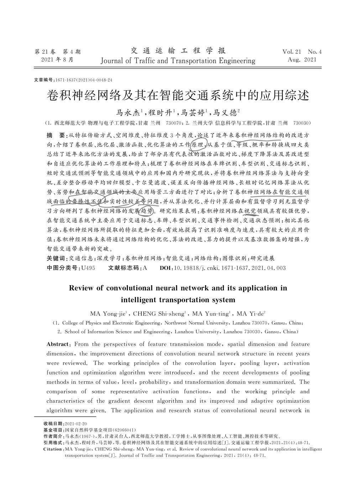
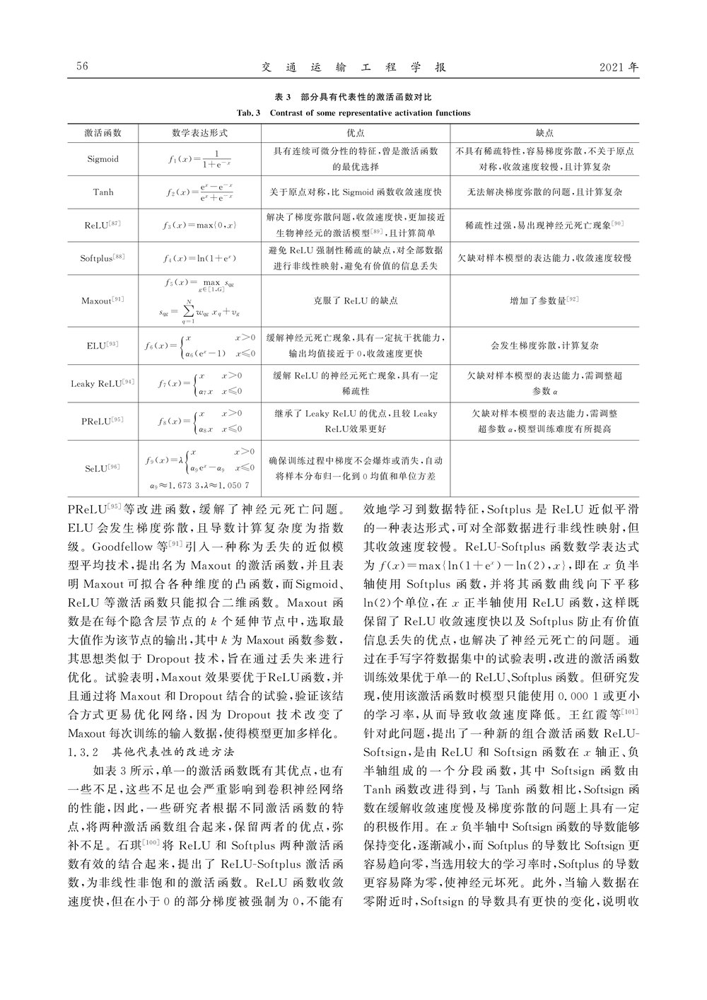
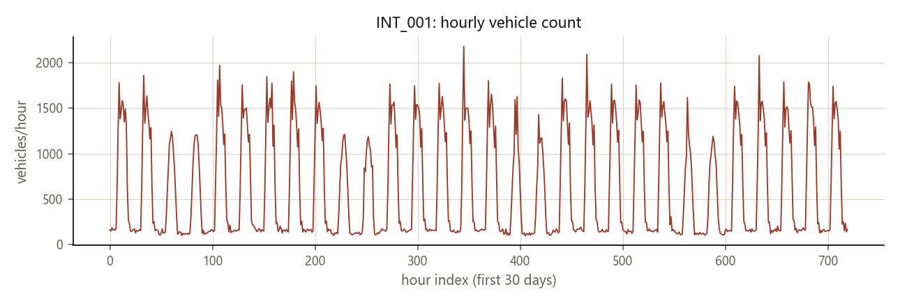
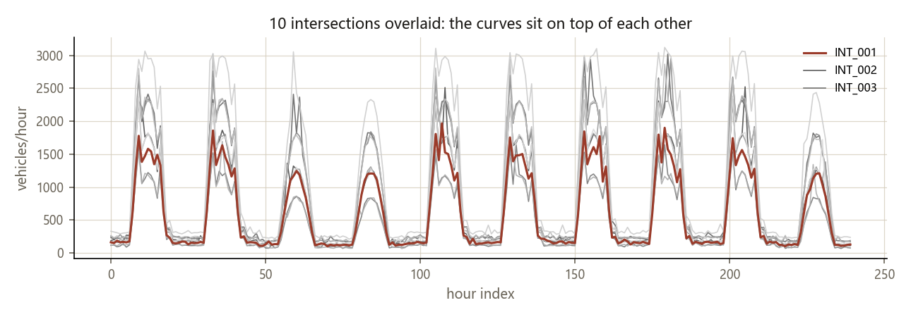
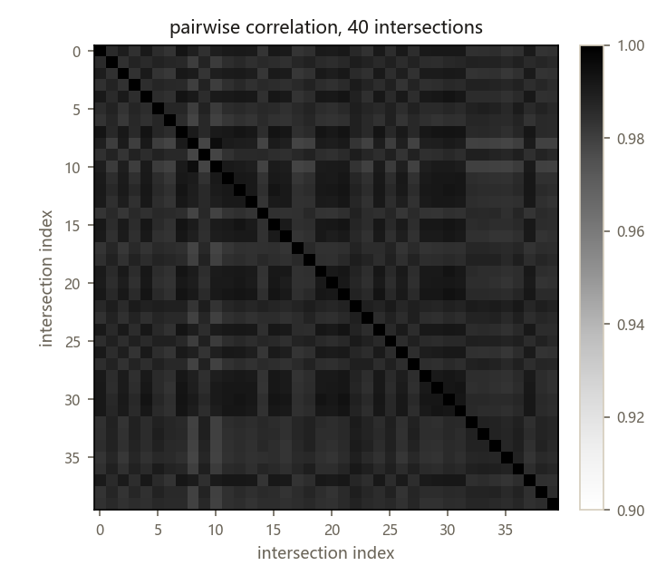
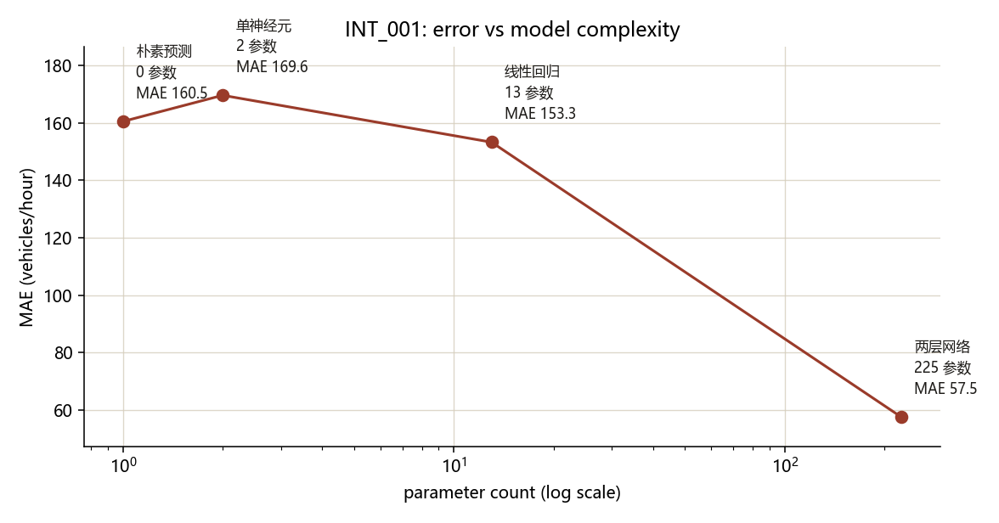
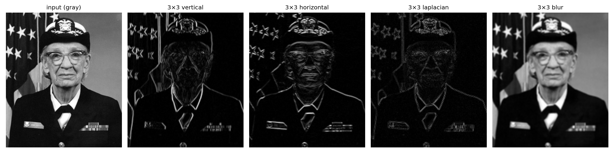
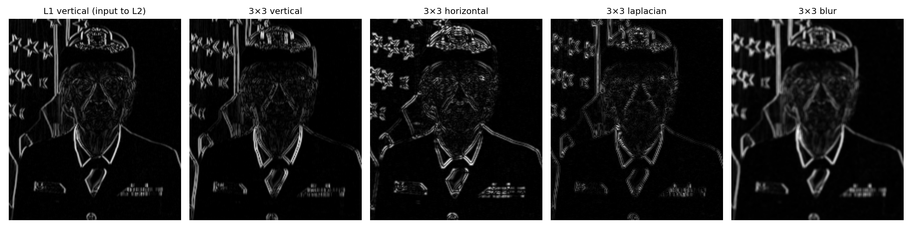

文献读到激活函数那一节，代码从最笨的模型一路加到 225 个参数。 这周想弄清楚的是：加参数、加非线性，各自到底管什么用。
读的是马永杰 2021 那篇综述：交通运输工程学报 21(4): 48–71，146 篇参考文献。 它把卷积神经网络在智能交通里的应用梳理成五类——车牌、车型、交通标志、交通事件、交通状态预测。
框架是清楚的。但卷积层内部到底怎么算，综述只给结论不给过程， 读完还是没底。所以决定先自己实现一遍，再回头看那几节。
读到激活函数时，顺手把整个结构整理成了一份笔记：卷积层提取局部特征， 同一张特征图里的神经元共享权重；池化层跟在卷积层后面做降采样，防止特征维度过高， 方法分基于值、概率、等级、转换域四类；激活函数提供非线性，常用 Sigmoid、Tanh、ReLU； 训练是前向算每层状态、算误差、反向传播、对权重和偏置求导这四步。


五类应用里，只有「交通状态预测」跟信号交叉口方向对得上，其余四类偏视觉识别。 下周打算把田秀娟 2018 和 2025 那篇信号交叉口的论文补上。
要动手，得先找一份能跑的数据。
手上三个数据集。SUMO 是仿真器导出的单路口记录，本来想用它看数据格式；
CN+ 是唯一一份真实路口检测数据，15022 条、14 个进口道，但 23 天里只有零散片段，接不成序列；
CityFlow 有 100 个路口、3 个月、小时级，序列最长，所以选它的 INT_001 做实验。
这是练手的选择，不是研究的选择。用之前我先简单测了一下 CityFlow，做了三个检查。
取 30 天看，是很规整的昼夜周期，每天两个高峰。峰值能到 3000 以上。

形状完全一样，只是整体上下缩放。说明这 100 个路口是同一个模板生成的。

两两相关系数均值 0.9870，最低 0.9783，最高的 0.9957。 100% 的组合都在 0.8 以上。图里几乎全是同一个色阶。

三个检查指向同一件事：这个数据集没有空间结构，做不了多路口建模。
另外它虽然带 signal_cycle_seconds、green_light_duration、queue_length
这些字段，看上去正好对上信号交叉口，但都是小时级聚合后的合成值，做不了分钟级分析。
数据既然只能练流程，那就从最笨的模型开始搭。
数据集用 CityFlow 里的 INT_001，一共 2040 个连续小时点。
用滑动窗口切成 2028 个样本：每个样本取连续 12 个小时的车辆数当输入，
紧跟着的那 1 个小时当答案。
按时间顺序切成三段，不打乱：前 1419 个训练，接着 202 个验证，最后 407 个测试。 标准化用的均值和标准差只从训练集算，验证集和测试集用同一组数换算。
四个模型的输入输出完全一样，区别只在内部怎么把 12 个数变成一个数： 朴素预测直接取最后一个数；单神经元给最后一个数配一个权重和一个偏置； 线性回归给 12 个数各配一个权重；两层 MLP 先把 12 个数升到 16 维、过一道 ReLU，再压回 1 维。
| 模型 | 参数 | MAE | RMSE | MAPE |
|---|---|---|---|---|
| 朴素预测：拿上一小时直接用 | 0 | 160.49 | 253.05 | 29.50% |
单神经元：y = w·x₁₂ + b |
2 | 169.58 | 246.76 | 39.16% |
| 线性回归：12 个输入加权求和 | 13 | 153.25 | 196.93 | 49.10% |
| 两层 MLP：12 → 16 → 1，中间有 ReLU | 225 | 57.54 | 90.93 | 19.45% |
MAE、RMSE 单位是辆/小时。学习率 0.05，最多 6000 轮，验证集连续 200 轮不降就停。

加 2 个参数，反而比不加更差。加到 13 个，只比朴素预测好了 7 辆。 一直到加了隐藏层和非线性，才出现断层式的下降。
那前面这三级到底在干什么，为什么加了参数反而更差？
把四个模型拆开看，前三个其实在做同一件事。 上一小时的流量和下一小时的相关系数是 0.9016，本来就是最强的预测因子， 但它们的权重都不是原样传下去。
只有一个权重，训练完是 0.8978，偏置约等于 0。 意思是「把上一小时的值打九折」。
打九折之后，大误差被压小了（RMSE 从 253.05 降到 246.76）， 但普通点的误差反而变大（MAE 从 160.49 涨到 169.58）。 这就是收缩估计的典型代价。
其中上一小时的权重是 0.9949，看着像「照抄」。 但其余 11 个权重有正有负，净贡献是 −0.4474。 合起来，这个模型对输入的响应强度只有一半。
所以它不是「抄上一小时」，是一个收缩的滞后模型： 稳态下预测值只有真实值的一半，会被拉向训练均值 617。 低流量时段真实只有一两百，它还在报几百，百分比误差就上去了。
按真实流量分档看百分比误差：
| 真实流量（辆/小时） | 样本 | 朴素 | 单神经元 | 线性 | 两层 MLP |
|---|---|---|---|---|---|
| 0 – 300 | 219 | 28.0 | 47.8 | 74.5 | 28.8 |
| 300 – 600 | 12 | 61.7 | 54.8 | 35.1 | 12.4 |
| 600 – 1000 | 38 | 69.2 | 62.2 | 33.9 | 23.4 |
| 1000 以上 | 138 | 18.1 | 17.7 | 14.3 | 4.1 |
0–300 档占测试集一半以上。两层 MLP 在这一档是 28.8%， 朴素预测 28.0%——只是追平，没有超过。 它真正的优势在 1000 以上那档，4.1% 对 18.1%。
所以准确的说法是：非线性的价值不在「修好低流量」，而在 让模型有余力同时拟合低流量和高流量两种形态。 线性模型只有一条斜率，MLP 可以分段。
到这里，全连接网络能做的都做完了。那卷积呢？
回到文献里没读懂的那部分。卷积层和全连接层最大的差别是权重共享： 一个 3×3 的核只有 9 个权重，却要在整张图上反复用。
我拿一张人脸照片试了试。核是人工指定的经典算子，不是训练出来的， 目的只是看清楚「卷积」这一步在干什么。


卷积层摊开来看，就是四个位置各拉成一行，乘同一个列向量。 全连接层每行的权重都不一样，卷积层用的是同一组。
马永杰那篇列的五类应用——车牌、车型、交通标志、交通事件、交通状态—— 前四类本质都是图像识别。它们的数据是规则网格，每个像素和上下左右严格相邻、间距相等。 卷积核能这么滑，靠的就是这个前提。
路网不满足这个前提。路口之间有的连、有的不连，间距不一样，还有单行和转向限制。 如果把路网摊成方格子，等于假设所有相邻路口都等距、每个格子都恰好对应一个路口， 这个假设在真实城市里不成立。
更合适的表示是图：路口当节点，道路当边。 GNN（Graph Neural Network，图神经网络）直接在图上做消息传递， 每个节点从和它相连的邻居那里收信息，再更新自己的状态。 这跟卷积其实是一回事——都是从邻居聚合信息，区别只在邻居的定义： 卷积的邻居是「网格上上下左右的格子」，图卷积的邻居是「图上连着的那些点」。
所以这一阶段的方向判断是：CNN 用在交通里的图像类任务（车牌、标志、事件检测）， 路网时空预测走 GNN。下周开始啃这部分。
这一路的所有数字，都建立在一个有问题的数据上。
这周的结论只到「流程跑通、代码没错」。要往下走，第一步不是换模型，是把数据解决掉。